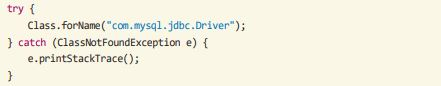
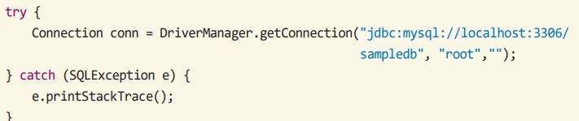
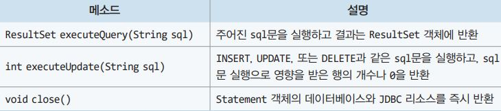
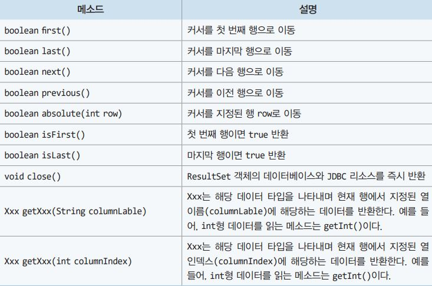

첫번째 단계. 데이터베이스와의 연결
데이터베이스와의 연결을 위해서는 우선 데이터베이스의 JDBC드라이버의 로드가 이루어져야한다
JDBC드라이버를 로드하기 위해 드라이버 클래스 파일을 로드한다
자바의 Class클래스의 forName()메소드를 이용하면 특정 클래스 파일을 읽어드릴 수 있다
Class.forName()함수 = 문자열이름만으로 자바클래스를 메모리에 동적으로 로드하고 초기화하는 정적메서드이다

위 사진상의 코드는 mysql의 JDBC드라이버인 com.mysql.jdbc.Driver클래스를 로드하여 드라이버 인스턴스를 생성하고 DriverManager에 등록한다.
DriverManager클래스는 그림에서의 JDBC드라이버 매니저 역할을 하는 클래스
JDBC드라이버의 클래스의 이름은 다 다를수 있다.
로드 중 드라이버가 없으면 예외오류가 발생하므로 반드시 try/catch문을 사용한다
DriverManager는 자바 응용프로그램을 JDBC 드라이버에 연결시켜주는 클래스이다.
아래 코드와 같이 DriverManager.getConnection() 메소드를 호출하여 데이터베이스에 연결하고 Connection 객체를 반환한다.

두번째 단계 데이터베이스에서의 사용
자바에서 데이터베이스에 연결 후에는 16.3절에서 설명한 MySQL 명령행 도구에서 사용한 SQL 문을 똑같이 사용하여 데이터베이스에 접근한다
자바에서 SQL문을 실행하기 위해서는 Statement 클래스를 이용하고, SQL문 실행 결과를 얻어오기 위해서는 ResultSet 클래스를 이용한다
Statement 클래스에서 자주 사용되는 메소드는 표와 같다

데이터를 검색하기 위해서는 executeQuery() 메소드를 사용하고, 추가, 수정, 삭제와 같이 데이터 변경은 executeUpdate() 메소드를 이용한다.
같이 데이터 변경은 executeUpdate() 메소드를 이용한다.
ResultSet 객체는 현재 데이터의 행(레코드 위치)을 가리키는 커서(cursor)를 관리한다. 초기 값은 첫 번째 행 이전을 가리키도록 되어있다.
따라서 ResultSet 클래스는 주로 커서의 위치와 관련된 메소드와 레코드를 가져오는 메소드를 제공한다.
ResultSet 클래스에서 자주 사용되는 메소드는 표 16-4와 같다.
